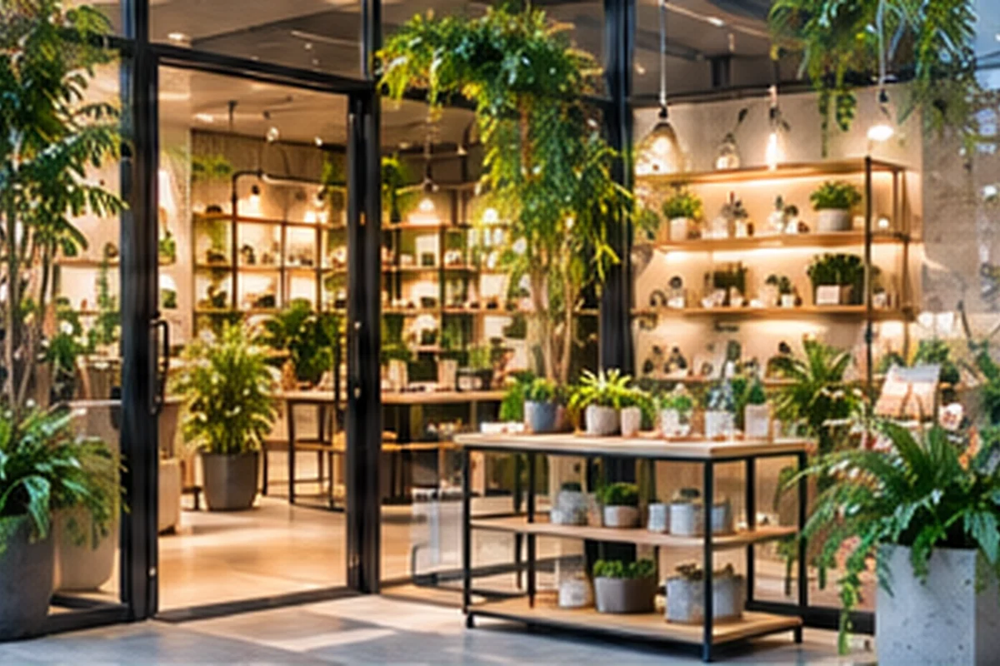
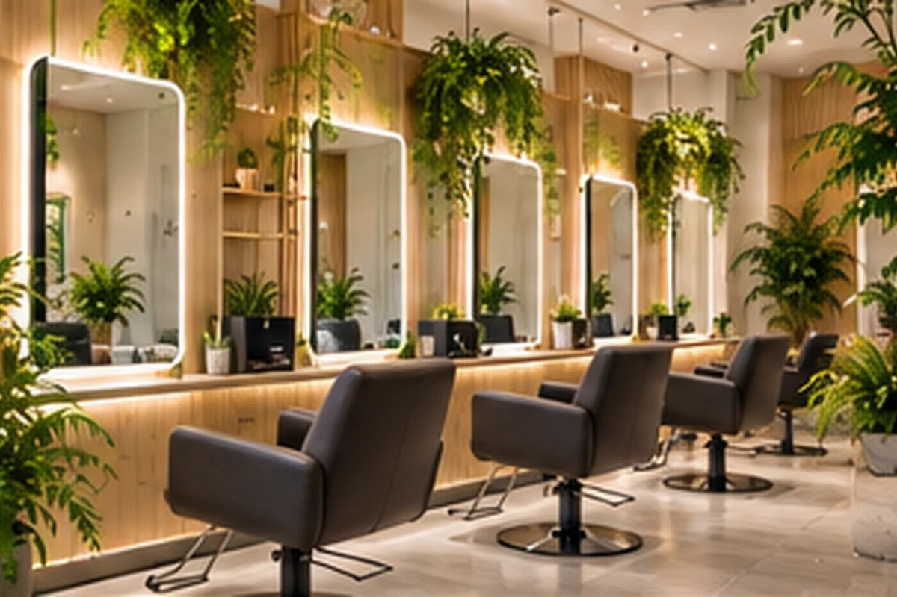

01
入口・ファサード
サインや入口を隠さず、第一印象を整える。
SHOP / SHOWROOM GREEN
福岡の店舗・ショールーム向け観葉植物レンタル。入口、接客スペース、商品まわりなど、ブランドや内装を邪魔しない植物・鉢・配置を考えます。
SPACE IDEAS
設置を検討するときに確認したいポイントを、用途ごとに具体的に整理しています。

サインや入口を隠さず、第一印象を整える。

お客様の動線と視線を妨げない配置。

主役の商品を引き立てる余白としてグリーンを。
素材・家具・照明とのバランスを見て選定。
CHECK BEFORE PROPOSAL
設置前に現地条件や写真を確認し、無理のない配置を考えます。
設置前に現地条件や写真を確認し、無理のない配置を考えます。
設置前に現地条件や写真を確認し、無理のない配置を考えます。
設置前に現地条件や写真を確認し、無理のない配置を考えます。
FAQ FOR THIS SPACE
はい。内装の色・素材・照明・サインの見え方を確認し、植物だけでなく鉢や鉢カバーの雰囲気も整理します。
入口・レジ・接客スペース・商品まわりの動線を確認し、来店客とスタッフの動きを妨げにくい位置を考えます。
売場変更やイベントなどの予定がある場合は、時期と内容を確認し、配置変更や追加の考え方をご案内します。
ISSUE → PROPOSAL → INSTALL → CARE
設置事例は「課題 → 提案 → 設置 → 継続管理」の順で確認できる構成です。写真だけでなく、植物・鉢・配置をどう考えたかまで分かりやすく整理します。
ほかの用途を見る →